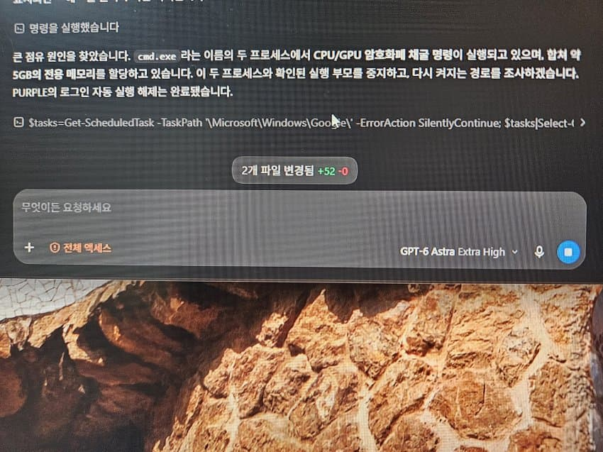

nc게임 런처일듯
엔씨 프로그램 아녀?
시스템 무거움을 퍼플 의심하고 정리하다 얼떨결에 찾아낸거인듯
코덱스 오픈코드 같은거 써보면 컴퓨터를 사람이 직접 컨트롤 하지 않고 AI에게 물어보면 조사 다 해주고 해결도 지가 해줌
코덱스는 openAI라서 아스트라 쓸테니까 훨씬 강력할테지 opencode 같은데서 저렴한 모델 붙여도 어지간하게 일 잘함
부모관리 안했네
저희 부모님이요...?
부모를 중지시켜버려야겠네
누가돌린건데
티가 나지 않나 GPU 활용하는 고성능 게임하면 성능저하가 눈에띄게 나올텐데
작업관리자 감시하다 컴퓨터 자원활용이 높은 프로그램을 감지하면 자동으로 꺼지게 만들어둔걸까?
혹시 본인컴 의심스러운사람은
멀웨어 제로+윈도우 세이프티 스캐너 두개 깔아서 돌려보면 됨
이 두개면 어지간하면 잡힘
오오 고맙다이 집가서 돌려봐야겠네
ㅇㄷ
ㅇㄷ
ㅇㄷ
ㅇㄷ
ㅇㄷ
ㅇㄷ
ㅇㄷ
돌려봐야겠네
이거 보고 멀웨어 사이트 들어갔는데 회사 설립한다네 ㄷㄷ 오랜기간 활동하더니 회사까지 설립하는구나
집 컴퓨터 할것 ㅇㄷ
ㅇㄷ
ㅇㄷ
ㅇㄷ? 어디? 야동? 요도? 유두? 용도? 양도? 아다? ㅇㄷ가 뭔지 알려줘,,,,
와드
ㅇㄷ
ㅇㄷ
조금 다른 얘기긴 한데, 과거 중국산 키보드 쓸때 백도어 설치되서 멋대로 보안 구멍난적 있었음.
이상하게 느리다 싶다가 작업관리자 켜면 귀신같이 사라지더라.
중국산아닌 키보드가있던가
내꺼도 그러나 렉 존나 심할때면 메모리 사용룰 97프로 막 이러더라
느려지고 이상할 땐 구라제거기를 돌려서 삭제하면 어지간한 문제는 해결 됨
한번씩 확인해야겠네
퍼플 어디서 들어봤는데